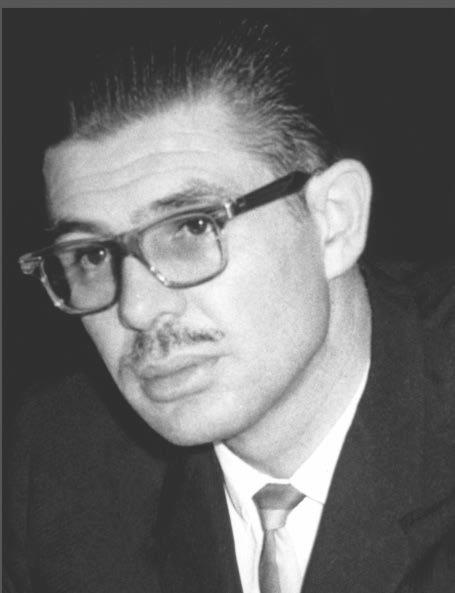

El Colegio Nacional de Educación Profesional Técnica es una institución educativa pública de nivel superior en México. Fue fundada en abril de 1978 por José Antonio Padilla Segura.
El Colegio Nacional de Educación Profesional Técnica, tiene como Misión, formar mediante un modelo basado en competencias, a Profesionales Técnicos y Profesionales Técnicos Bachiller, capacita y evalúa con fines de certificación de competencias laborales y servicios tecnológicos para atender las necesidades del sector productivo del país.
El Colegio Nacional de Educación Profesional Técnica es una Institución líder en la formación de Profesionales Técnicos y Profesionales Técnicos Bachiller en México, que cursan programas reconocidos por su calidad y basados en el modelo mexicano de formación dual, egresan con competencias laborales y valores sociales que les permiten ser competitivos en el mercado laboral y continuar estudios superiores. El CONALEP es reconocido como centro de capacitación, evaluación y certificación de competencias laborales y servicios tecnológicos, contribuye a elevar la productividad y competitividad del país.